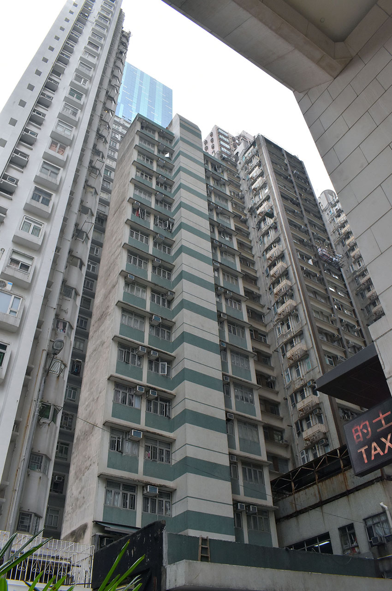
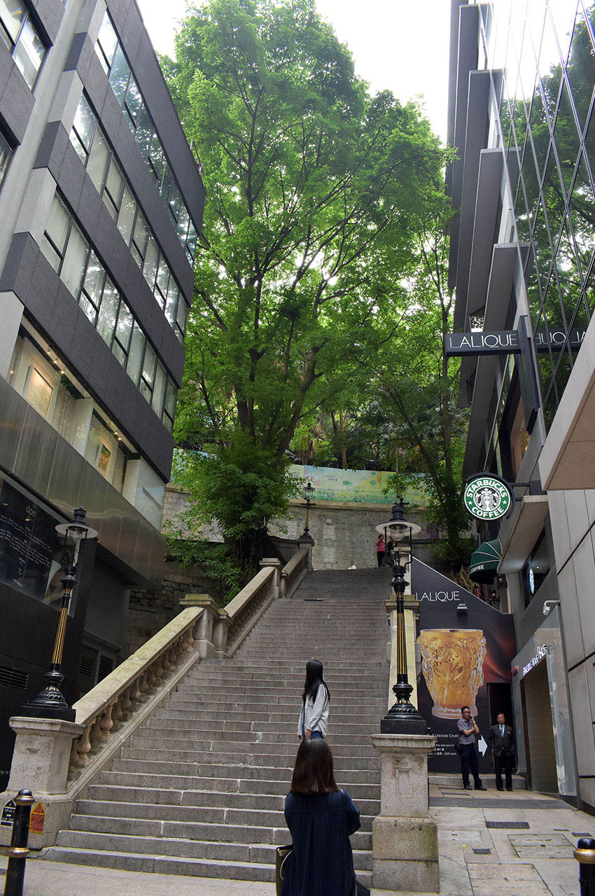
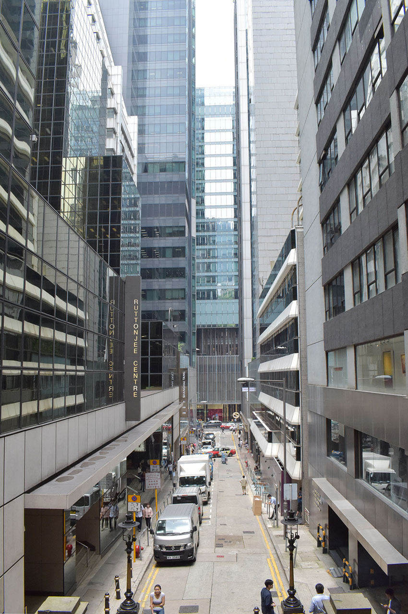
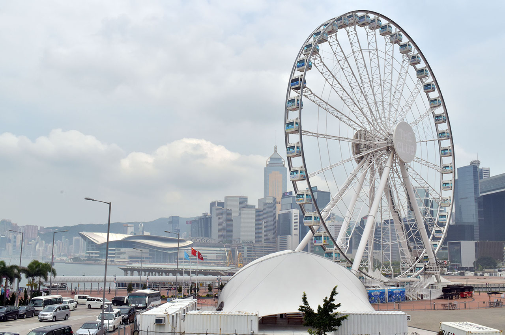
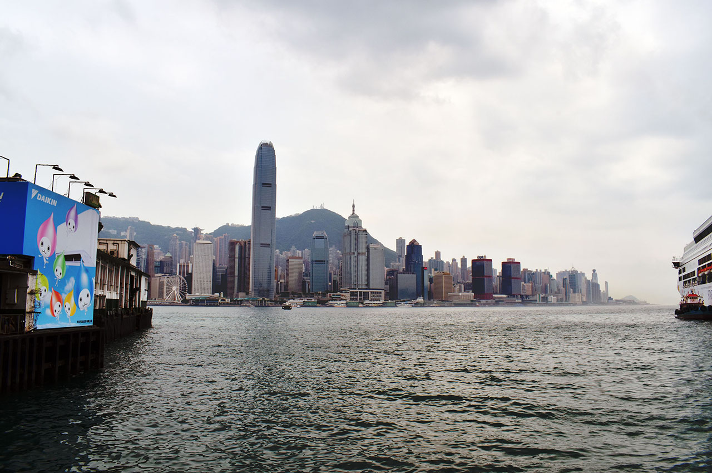
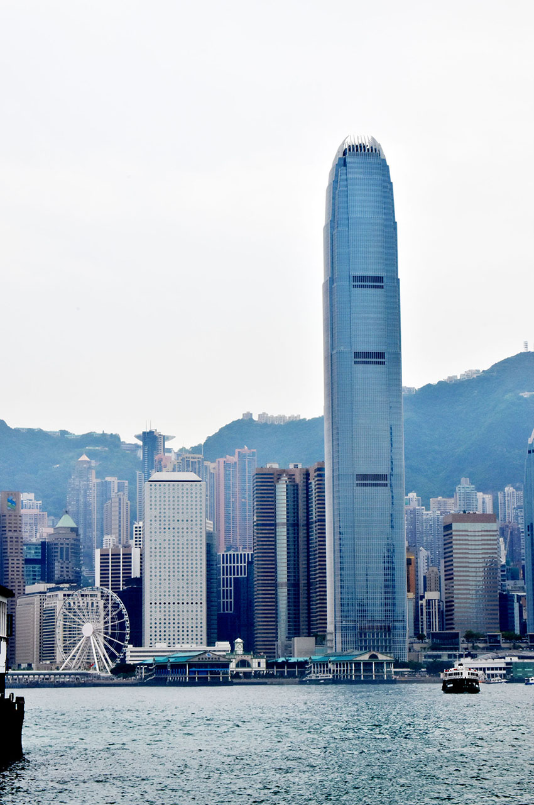

【香港旅行記】旅の記録 2日目 前半 … 香港島のスタバを満喫
ゴールデンウィークに3泊4日で行ってきた香港旅行。今日は2日目の模様をお届け。
全体的な計画や準備のお話は以下の初回の記事をご参照のこと。
1日目の旅行記はコチラ。
香港旅行2日目は一日自由行動。香港市内を観光することにした。
朝食はバイキング
朝7時頃に起床。幸い今日は晴れている。
7時半ぐらいに、ハーバーグランド香港の3階にある朝食バイキングに行ってみた。
僕は元々朝食を食べる方ではないので、食べた量は少なめだったが、美味しい朝食だった。紅茶っぽい色なんだけど味は緑茶に近い、不思議な紅茶が美味しかった。
↑サラダうまうま。
伝票に値段が書いてあって、「Gratuity (グラチュイティー)」という、「プラスあといくらチップをくれますか？」みたいな記入欄があった。サービス料は既に 10% 取られてるのにチップは別なのか？ と思い、食事の 10% くらいかなと思って30香港ドルと記載した。
だが、後で調べてみると、こうやって余分にチップをくれる旅行客を狙ってのやり方みたいで、別に支払わなくてもいいみたい。支払わない場合は二重線でチップ欄を消しておくか、「チップをいくら払います」欄ではなく「チップ込みで合計いくら支払う」という欄になっているのであれば、合計額と同額を書いてチップは 0 ドルと分かるようにしておくと良いようだ。
基本的には10%のサービス料が日本と同じようにサービスの良し悪しにかかわらず取られますので不要です。にもかかわらず、ホテルの部屋付けにする際にサインする伝票にはGratuityつまりチップの欄があったり、レストランのクレジットカードスリップにはTipsの欄がありますが、これは自国にチップの習慣があり知らずに記入してしまうアメリカ人などに期待してのことです。そんな欄は横棒を引いて、合計欄にそのままの金額を記入すればいいのです。（サービス料は従業員の給料には反映されませんが、チップとして記入されたものについては給料にプラスして従業員に支払われます。）まあ、書いてくれれば儲けもの、サービス料は取ってはいるがいただけるものはいただこうという香港人の考え方によります。
支払いはチェックイン時に登録したクレジットカードで請求するよー的な感じだった。30香港ドルというと日本円で450円程度か。ワンコインの勉強代と思って黙って支払っておいた。
ホテルを出て感じた蒸し暑さ
一度部屋に戻り、身支度をした。外出中に部屋の掃除をしておいてほしかったら、「Do not disturb」の表示を消しておくこと。バスタオルなどは浴槽に投げ入れておかないと交換してくれないので注意 (何なんだろうこの文化…)。
午前10時半頃にホテルを出発。チェックアウトではないのでフロントで何かする必要はなし。まずはホテルを出てすぐ近くにある 「炮台山 (ほうだいざん)」駅、英語で「Fortress Hill」駅 から地下鉄 MTR に乗り 「中環 Central (セントラル)」駅 を目指すことに。
ホテルを出た瞬間に感じたのは、日本では味わったことのない蒸し暑さ。気温は30度前後で、湿度はかなり高い。日本でこんなに湿度の高い夏に出会ったことがない。かなりの暑さの中、写真を撮りつつ駅に向かった。

↑ホテルを出た向かいにある建物。
↑このように高層マンションが立ち並ぶ。
↑ハーバーグランド香港ホテルがある通りは「油街 Oil Street」と呼ばれている。
地下鉄 MTR に乗る
MTR と呼ばれる香港の地下鉄の乗り方はこうだ。
- 券売機で目的の駅名を選択すると、液晶画面に値段が表示される。
- 大人なら「Adult」を選択する。複数枚買う時は「Multiple」を選択すると複数買える。
- 支払いはコインしか受け付けていなかったかな？お金を入れると、お釣りとともに IC カードが出てくる。
- この IC カードを改札にタッチして入る。
- 降りる駅では改札に IC カードを差し込んで、切符の要領で IC カードを手放して出れば良い。
というワケで最初は少し戸惑うかもしれないが、やってみれば慣れるだろう。
↑これが券売機。
↑切符代わりにこんな IC カードが出てくるので、これを改札にタッチする。
地下鉄のホームは日本にあるホームドアとは違い、天井まで完全に自動ドアで覆われていて、線路に出たりすることはできなくなっている。余計な事故とそれによるタイムロスをなくすための施策ということか。
電車のドアは容赦なく閉まるので注意。日本みたいに優しく開き直してくれたりとかしない感じ。目の前でベビーカーを押したお母さんが完全に挟まれて「キャー」って言ってたけどドアは開かず、頑張って押し入る感じだった。ホント強弱がハッキリしている…。
電車はどの時間に乗っても割と混んでいる。日本の埼京線や有楽町線のラッシュ時をイメージしてもらえばいいだろうか。運が良ければ椅子に座れるが、椅子は鉄製で横に滑る。ｗ
↑意味不明な駅の広告。
セントラル駅からスタバに向かう
電車に乗って5駅、10分ちょっとで、中環・セントラル駅に着いた。駅前はちょっとした金融街というか、六本木みたいなシャレオツブランドが並ぶ街だった。
↑セントラル駅を出たところ。
↑行ったことないけどニューヨークみたいなビル街なイメージ。
このセントラル駅に来たのは、香港スターバックスで名物のコーヒーエッグタルトを食べるため。
セントラル駅からスターバックスまでの道のりは10分程度でさほど遠くないが、一応地図を見ておこうと思い「イモトの Wi-Fi」を起動させたが、一向に繋がらない。悪戦苦闘したがどうにもならず、結局地下鉄のフリー Wi-Fi に接続して道のりを確認した。

↑こんな階段の途中にスタバがある。
スタバに着いたのが12時ぐらい。コーヒーエッグタルトとレモンタルト、あとショートサイズのアイスコーヒーを飲んだ。蒸し暑い香港は室内の冷房がガンガン効いている。電気代大丈夫なのかと思うくらい涼しくなってて、逆に体調崩しそう。コーヒーエッグタルトはとても美味しかった。
↑これがコーヒーエッグタルト。
↑レモンタルト。
スイーツを食べながら、イモトの Wi-Fi が繋がらない理由を探ってみたが結局分からず。色々と設定の初期化とかしてみたけどダメだった。この間はスタバのフリー Wi-Fi に繋いで色々調べてた。
↑スタバの店内にあった謎の振り子の置物。
香港島から九龍島に移動する
スタバに割と長居して13時くらいになった。イモトの Wi-Fi はラチが明かなかったので諦めて、このセントラル駅がある香港島から九龍島に渡るフェリーに乗ることにした。スタバからセントラル駅の出口付近に戻り、そこから徒歩15分程度でフェリー乗り場に着いた。

↑スタバの入口から階段の下の方を撮影。
↑観覧車があった。

↑行ったことないけどロンドンの Festival Pier みたい？
↑これがフェリーターミナル。
フェリーは1階席と2階席があり、2階席が少しだけ値段が高い。が、2香港ドルと2.5香港ドルぐらいで、いくらも変わらないので、眺めが良さそうな2階席を選んだ。「トークン」と呼ばれるプラスチックのチケットを自販機で購入し、改札口に投入してゲートを通る。フェリーは5〜10分おきぐらいに到着するので、ほとんど待つことなく乗り込める。
↑これがトークン。
↑フェリーに乗る改札。
フェリーはそこそこ揺れるが、10分も乗らないので酔い切る前に降りられる。それなりに良い眺めで、九龍島に近付いていくのが面白い。
九龍島に到着し、自分たちがそれまでいた香港島をバックに写真を撮ったりした。



香港島から九龍島に着いたところで、記事中の写真の数が多くなり過ぎてしまうので、ココで一区切り。
次は2日目の後半、九龍島探索と九龍城跡地を巡ります。